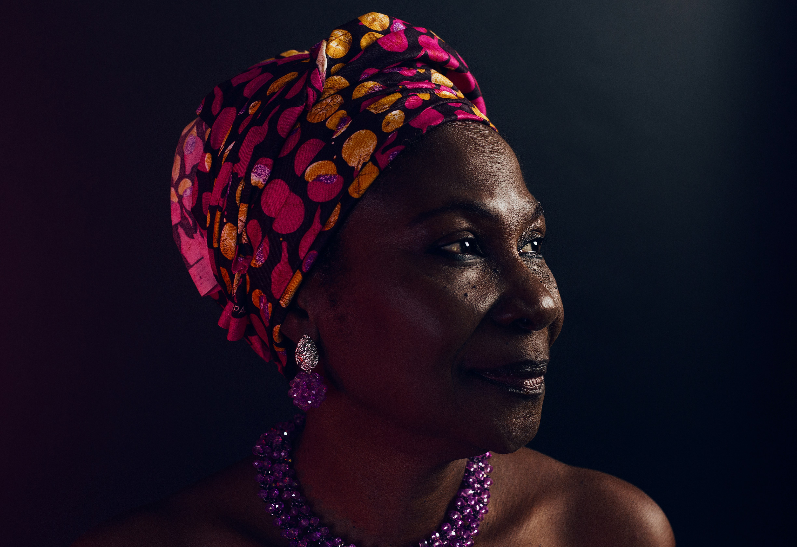
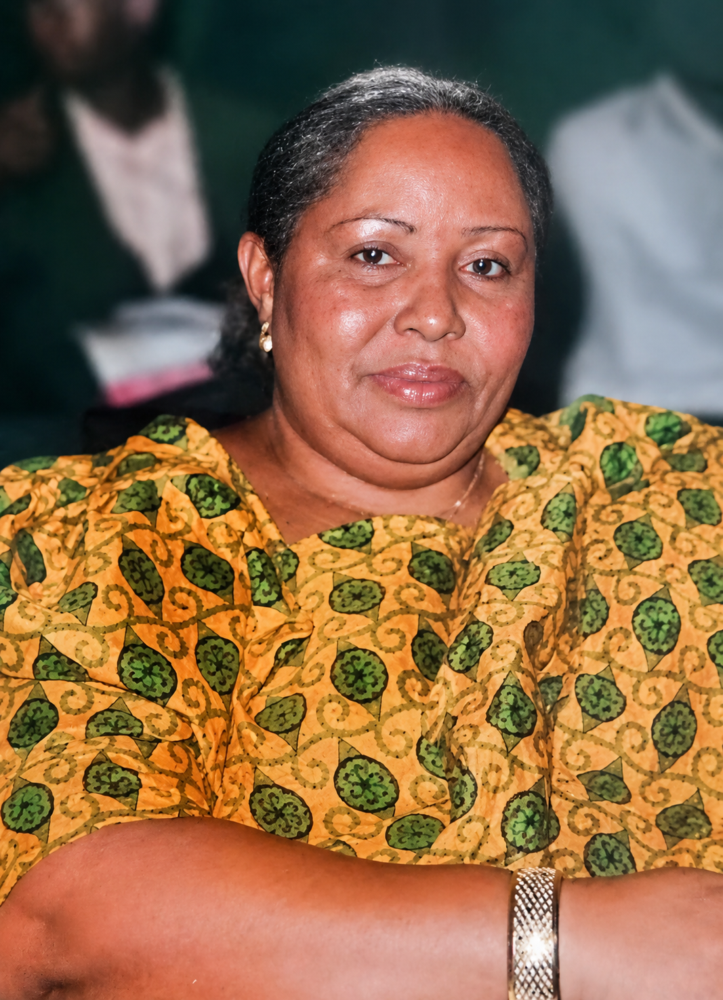
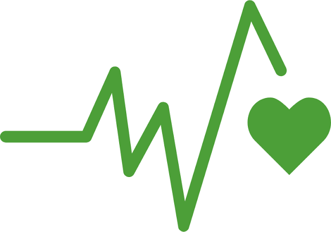
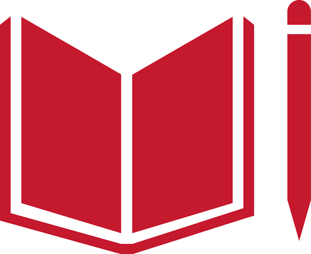
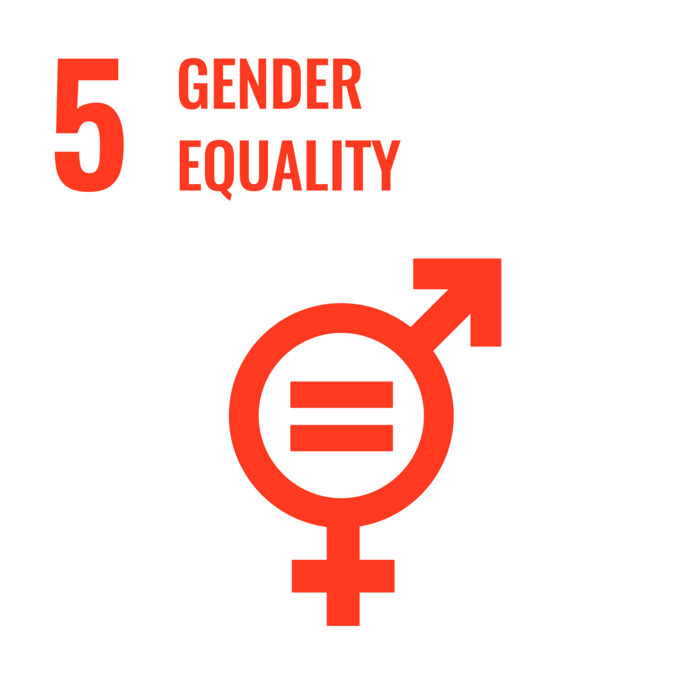
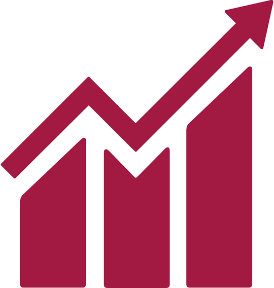
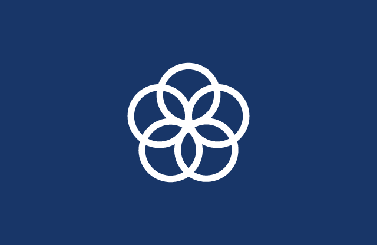
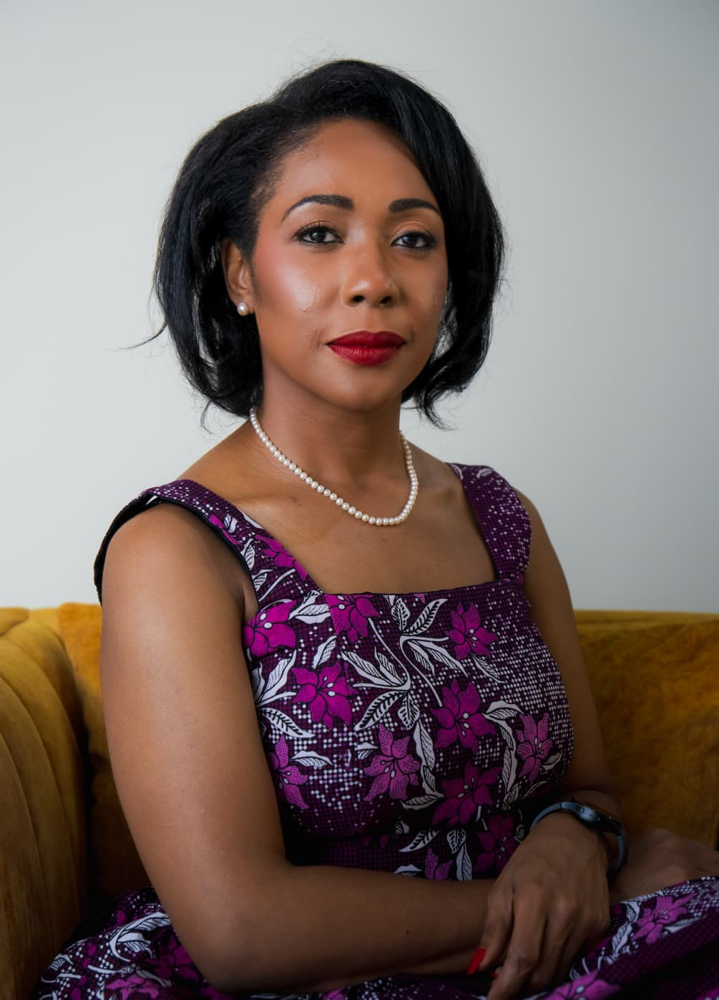
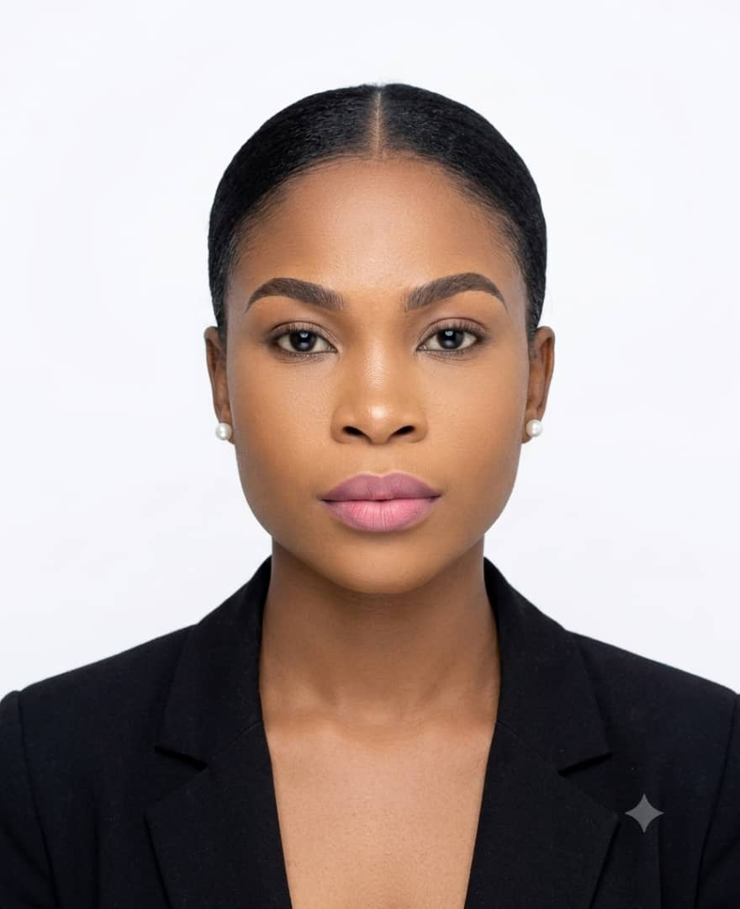
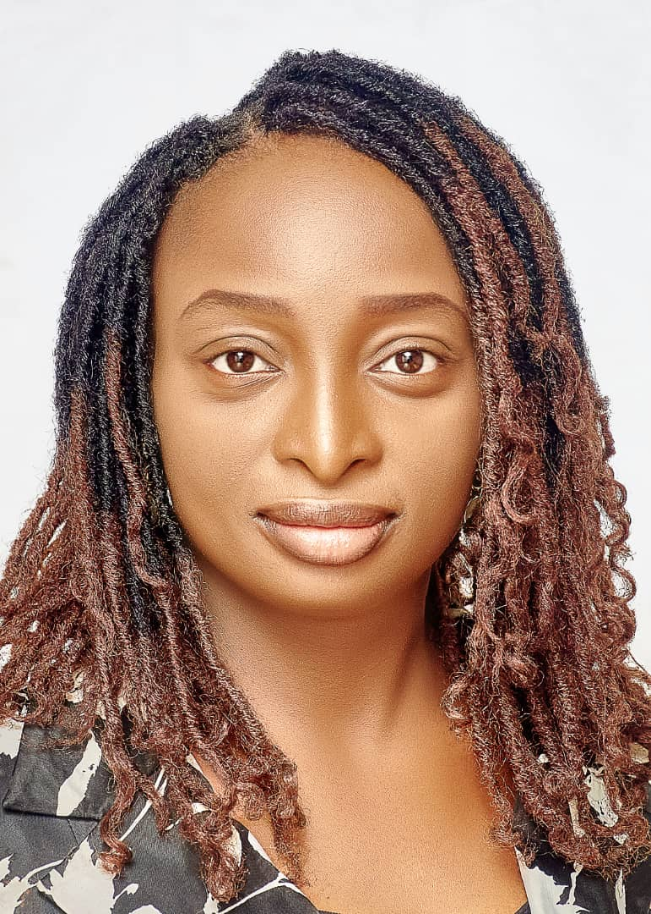

Born of love. Built on loss. Carried forward by purpose.
Every programme we run traces back to one woman, Onyechibuleze Nnenna Asika, and the promise made in her memory.

Mama Nnenna's legacy and the founder's journey
In 2018, our founder lost her beloved mother, Onyechibuleze Nnenna Asika, to complications arising from high blood pressure and diabetes. Her passing left a void in our family, but it also ignited a call that would eventually become the ONM Foundation.
She was the heart of our family, a woman of extraordinary compassion, strength and generosity, known for her warm spirit, straightforward nature and unwavering commitment to helping others. She believed strongly that every woman should possess a skill that could support her independence and dignity. She always said: "Every woman should learn one handwork; it may save her one day."
Her passion for women and children was so evident that she became fondly known as "Mama'n Yara", Hausa for Mother of Children. To many she was affectionately called Mama Asika. To her daughter, she was simply "My Mrs. Chief." She spent her life caring for people, encouraging women, supporting families and opening her heart to anyone in need.
When she passed, our founder knew she wanted that legacy to live on. At the time she was running Obiianuju Media Limited, now OML Consulting Africa, and serving as a facilitator for Google's Digital Marketing Skills Programme and the IntelShewill Connect Programme. Through that work she encountered hundreds of women eager to improve their lives, grow their businesses and build better futures for themselves and their families.
While teaching digital skills she noticed a recurring challenge. Many women had potential, passion and ideas, but lacked the support systems, confidence, exposure, resources and opportunities needed to thrive.
Not long after, life brought the story even closer to home. Like her mother, she was diagnosed with high blood pressure, a reality that forced her to confront her own health, lifestyle, stress levels and wellbeing. It became a deeply personal reminder that many women spend so much time caring for others that they often neglect themselves. She began to understand firsthand the importance of preventive healthcare, wellness education, early detection, and creating spaces where women can openly discuss their physical, emotional and mental health.
What started as a desire to honour her mother's memory became a greater mission: to help women prioritise their wellbeing before a crisis occurs, and to ensure that fewer families experience the pain of losing a loved one to preventable or manageable health conditions.
What started as digital skills training soon evolved into something much bigger. Beyond business conversations, women began sharing stories about stress, financial struggles, health concerns, grief, self-doubt and the daily pressures of balancing life, family and work. Today the ONM Foundation is not only a tribute to a mother's legacy but a reflection of a daughter's own journey of purpose, resilience, healing and service.
One woman at a time.
One family at a time.
One community at a time.
Because when women rise, communities flourish, and generations are transformed.
Obiianuju Asika
Founder & Executive Director
A women-led, impact-driven organisation.
The Obiianuju-Nnenna Media (ONM) Foundation is a women-led, impact-driven non-governmental organisation committed to improving the lives of women, girls, young people and underserved communities.
We work through health, education, leadership development, digital inclusion, economic empowerment, advocacy and community support. We believe that when women and girls are healthy, educated, confident, financially empowered and supported, they become catalysts for stronger families, thriving communities and sustainable social transformation.
Our work is guided by the conviction that every woman and girl deserves access to quality healthcare, education, opportunities, leadership pathways and the resources needed to fulfil her potential. Through an integrated ecosystem of programmes, campaigns, communities and media platforms, we deliver practical, people-centred solutions that enable women and girls to heal, learn, lead, thrive and build better futures.
To build an inclusive and resilient Africa where women and girls are healthy, educated, empowered and equipped with the opportunities and support systems needed to thrive and contribute meaningfully to society.
To advance the wellbeing and empowerment of women and girls through sustainable, women-centred interventions in health, education, digital inclusion, leadership, economic development, advocacy and community engagement.
Our Core Values
Six values shape our culture, guide our decisions and define how we deliver impact.
Compassion
We serve with empathy, dignity and genuine care, placing people at the heart of everything we do.
Empowerment
We equip women and girls with the knowledge, confidence, resources and opportunities to lead, thrive and transform their communities.
Integrity
We uphold transparency, accountability and ethical leadership in our work, decisions and partnerships.
Collaboration
We believe lasting change is achieved through meaningful partnerships, community participation and collective action.
Innovation
We embrace creative, sustainable and evidence-informed solutions that respond to the evolving needs of women and underserved communities.
Impact
We are committed to measurable and lasting change that improves lives, strengthens communities and advances gender equality.
Who We Serve
We serve women and girls at every stage of life, alongside young people and underserved communities, with a particular focus on those facing social, economic, educational and health related barriers.
Women 18 to 60+ years
Entrepreneurs, professionals, single mothers, caregivers, women in underserved communities and those navigating personal, health, economic or life transitions.
Adolescent Girls 10 to 17 years
Schoolgirls and vulnerable girls requiring educational support, menstrual health education, mentorship, protection and leadership development.
Young Women 18 to 35 years
Students, graduates, early career professionals and aspiring leaders seeking personal development, digital skills, mentorship and economic opportunity.
Female Entrepreneurs Business owners
Women leading micro, small and growing businesses who need business development support, financial literacy, digital skills and opportunities for growth.
Women Affected by Vulnerability & GBV
Women and girls requiring protection, healthcare, psychosocial support, counselling, temporary safe accommodation and pathways to recovery and independence.
Youth & Underserved Communities
Young people and individuals who benefit from digital education, skills development, health awareness, community engagement and empowerment opportunities.
Our Commitment
We recognise that empowering women and girls requires more than isolated interventions. It requires an ecosystem of care, opportunity, education, protection and support.
We remain committed to building sustainable programmes, meaningful partnerships and inclusive platforms that create lasting impact across Nigeria and Africa.
We are building women.
We are strengthening communities.
We are creating sustainable impact.
Geographic Focus
Our programmes are designed to reach women, girls and underserved populations across urban, semi-urban and grassroots communities in Nigeria, with a long-term vision of expanding our reach across Africa through strategic partnerships, collaborative programmes and scalable impact initiatives.
Through our growing ecosystem of programmes, platforms and community interventions, we seek to ensure that opportunities for health, education, empowerment, dignity and sustainable development are accessible to those who need them most.
Our work maps to the UN Sustainable Development Goals.
Tap any goal to read it in full on the United Nations website.

03Good Health and Well-being
04Quality Education
05Gender Equality
08Decent Work and Economic Growth
17Partnerships for the GoalsThe Sustainable Development Goals icons are the property of the United Nations.
Governance grounded in values, guided by purpose, committed to legacy.

Obiianuju Asika
Board Member, Founder & Executive Director
Evarist Asika
Board Member
Emmanuel Asika
Board Member
Counsel that keeps the mission honest.

Dr Joana Idakwo
Advisory Board Member

Ms. Uchechukwu Obioha
Advisory Board Member

Saratu Miller
Advisory Board Member
The people carrying the work forward every day.

Vivian Achu
Director of Strategic Partnership & Development

Oriyomi Olowolagba
Head, The Resilient Woman Network
Partners
We believe that sustainable impact is built through collaboration. We partner with organisations and individuals who share our commitment to women's empowerment, health and wellbeing, education, gender equality and community development.
We welcome partnerships with
Through strategic partnerships, resource sharing and collective action, we aim to expand our reach, strengthen our programmes and create lasting impact across Nigeria and Africa.
Together, we can build stronger women, healthier communities and a more equitable future.